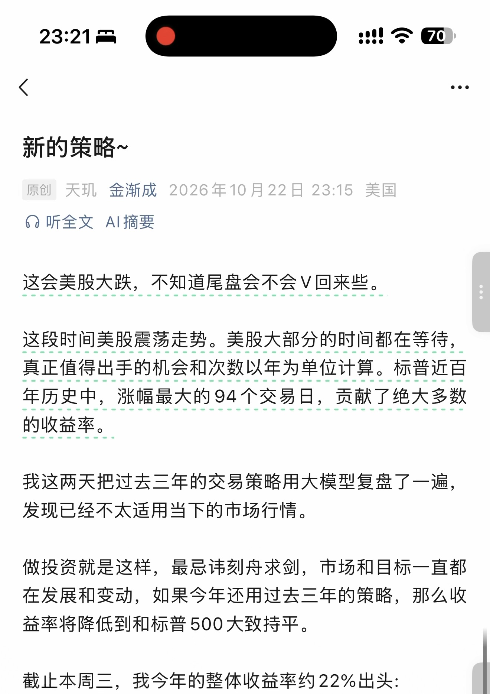
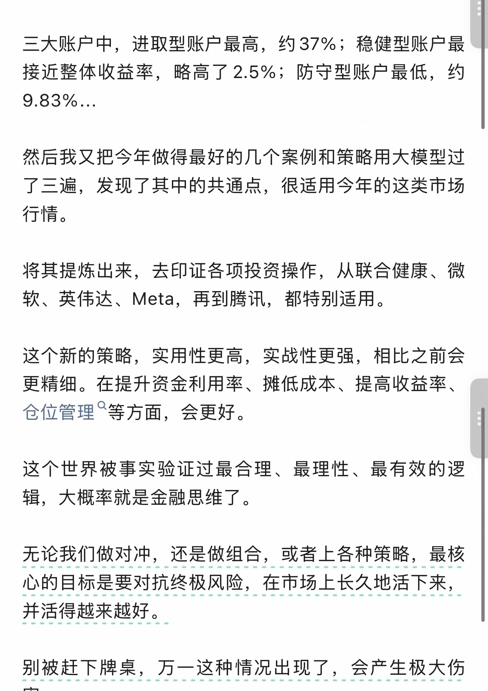
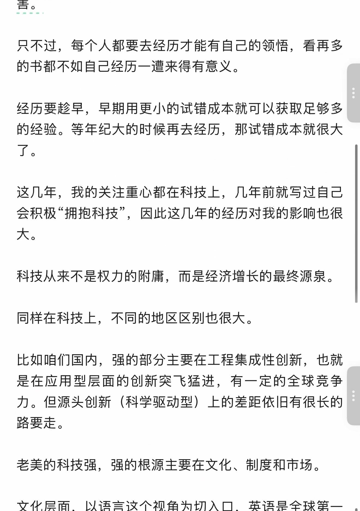
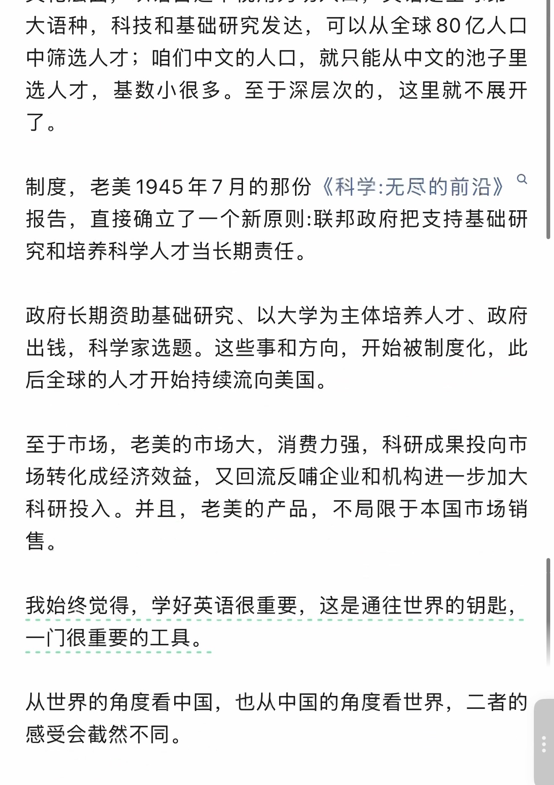
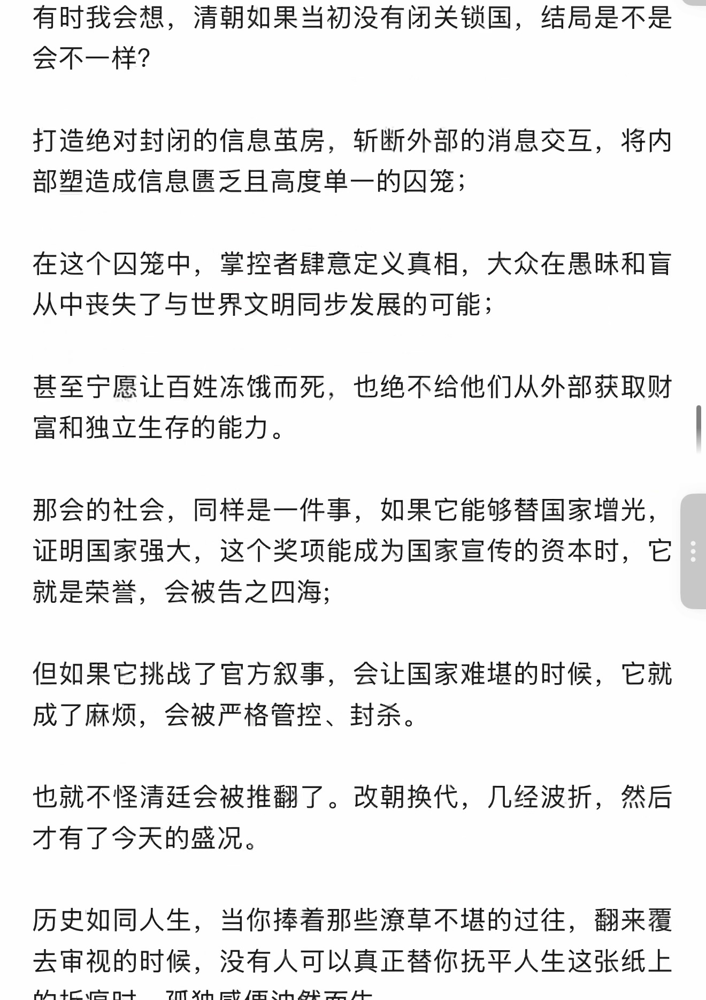

新的策略~
识别文字连续阅读 · 原图附后
原始 PDF 不公开，本页展示捕获页面的截图。 识别文字按页序连续显示，全部原始截图附在文末，便于对照。文字由视觉转录整理，尚未经人工逐字核对，可能存在错字、漏字、漏行、顺序或断行错误。本页没有转录任何留言：第 6 页截图中的私人留言未转录，该页原图不公开；截图不代表完整线上留言，也未据此推断留言总数。
OCR 识别提示（待核对）
- OCR/视觉转录文字，尚未逐字校对；可能错字、漏字、漏行，数字、姓名、表情、标点及断行也可能有误，请以截图为准。
- 这里只转录了 PDF 已截到的正文，没有转录任何留言；第 6 页截图中的私人留言未转录，该页原图不公开；截图以外的留言不在此存档中。
- 未从截图推断留言总数或回复关系；手机界面文字也可能混入 OCR。
- 方括号中的表情说明是转录注释，原始表情请对照截图。
- 页面边界仅露出少量字形的重复行归到文字主体可见的相邻页；不推断缺失内容。
识别文字
文字按截图页序整理；页边重复行仅保留一次，原始 PDF 不公开。方括号中的表情说明为转录注释。
第 1 页对照原图
新的策略~
原创 天玑 金渐成 2026年10月22日 23:15 美国
这会美股大跌，不知道尾盘会不会V回来些。
这段时间美股震荡走势。美股大部分的时间都在等待，真正值得出手的机会和次数以年为单位计算。标普近百年历史中，涨幅最大的94个交易日，贡献了绝大多数的收益率。
我这两天把过去三年的交易策略用大模型复盘了一遍，发现已经不太适用当下的市场行情。
做投资就是这样，最忌讳刻舟求剑，市场和目标一直都在发展和变动，如果今年还用过去三年的策略，那么收益率将降低到和标普500大致持平。
截止本周三，我今年的整体收益率约22%出头:
第 2 页对照原图
三大账户中，进取型账户最高，约37%；稳健型账户最接近整体收益率，略高了2.5%；防守型账户最低，约9.83%...
然后我又把今年做得最好的几个案例和策略用大模型过了三遍，发现了其中的共通点，很适用今年的这类市场行情。
将其提炼出来，去印证各项投资操作，从联合健康、微软、英伟达、Meta，再到腾讯，都特别适用。
这个新的策略，实用性更高，实战性更强，相比之前会更精细。在提升资金利用率、摊低成本、提高收益率、仓位管理等方面，会更好。
这个世界被事实验证过最合理、最理性、最有效的逻辑，大概率就是金融思维了。
无论我们做对冲，还是做组合，或者上各种策略，最核心的目标是要对抗终极风险，在市场上长久地活下来，并活得越来越好。
别被赶下牌桌，万一这种情况出现了，会产生极大伤害。
第 3 页对照原图
只不过，每个人都要去经历才能有自己的领悟，看再多的书都不如自己经历一遭来得有意义。
经历要趁早，早期用更小的试错成本就可以获取足够多的经验。等年纪大的时候再去经历，那试错成本就很大了。
这几年，我的关注重心都在科技上，几年前就写过自己会积极“拥抱科技”，因此这几年的经历对我的影响也很大。
科技从来不是权力的附庸，而是经济增长的最终源泉。
同样在科技上，不同的地区区别也很大。
比如咱们国内，强的部分主要在工程集成性创新，也就是在应用型层面的创新突飞猛进，有一定的全球竞争力。但源头创新（科学驱动型）上的差距依旧有很长的路要走。
老美的科技强，强的根源主要在文化、制度和市场。
第 4 页对照原图
文化层面，以语言这个视角为切入口，英语是全球第一大语种，科技和基础研究发达，可以从全球80亿人口中筛选人才；咱们中文的人口，就只能从中文的池子里选人才，基数小很多。至于深层次的，这里就不展开了。
制度，老美1945年7月的那份《科学:无尽的前沿》报告，直接确立了一个新原则:联邦政府把支持基础研究和培养科学人才当长期责任。
政府长期资助基础研究、以大学为主体培养人才、政府出钱，科学家选题。这些事和方向，开始被制度化，此后全球的人才开始持续流向美国。
至于市场，老美的市场大，消费力强，科研成果投向市场转化成经济效益，又回流反哺企业和机构进一步加大科研投入。并且，老美的产品，不局限于本国市场销售。
我始终觉得，学好英语很重要，这是通往世界的钥匙，一门很重要的工具。
从世界的角度看中国，也从中国的角度看世界，二者的感受会截然不同。
第 5 页对照原图
有时我会想，清朝如果当初没有闭关锁国，结局是不是会不一样？
打造绝对封闭的信息茧房，斩断外部的消息交互，将内部塑造成信息匮乏且高度单一的囚笼；
在这个囚笼中，掌控者肆意定义真相，大众在愚昧和盲从中丧失了与世界文明同步发展的可能；
甚至宁愿让百姓冻饿而死，也绝不给他们从外部获取财富和独立生存的能力。
那会的社会，同样是一件事，如果它能够替国家增光，证明国家强大，这个奖项能成为国家宣传的资本时，它就是荣誉，会被告之四海；
但如果它挑战了官方叙事，会让国家难堪的时候，它就成了麻烦，会被严格管控、封杀。
也就不怪清廷会被推翻了。改朝换代，几经波折，然后才有了今天的盛况。
历史如同人生，当你捧着那些潦草不堪的过往，翻来覆去审视的时候，没有人可以真正替你抚平人生这张纸上的折痕时，孤独感便油然而生。
第 6 页对照原图
经历过的事情越多，就越喜欢简单的生活、质朴的东西、心安的感觉、有结果的事，以及说到做到的人。
就这样吧。
历史文章 · 目录
上一篇 · 一生只需富一次~
作者提示：个人观点，仅供参考
阅读 5172
第 7 页对照原图
金渐成
[页面底部互动计数：190、191、36；写留言。原始图标及布局以截图为准。]
原始图片 · 7 页
第 1 页 · 原始截图


第 2 页 · 原始截图


第 3 页 · 原始截图


第 4 页 · 原始截图


第 5 页 · 原始截图


第 6 页 · 原始截图
第 6 页原图不公开（截图含私人留言）。本页文字未转录任何留言。
第 7 页 · 原始截图

按日期浏览全部来源（同日按条目标识排序）
回到页首